Turning no-shows into
engaged clients.
40% of scheduled recruiter meetings ended in no-shows. Clients signed up, booked a call — then ghosted. The intake flow was supposed to be Upwork's premium on-ramp, but it was bleeding qualified leads before a single conversation happened. I redesigned the flow end to end in 5 weeks.
The revenue leak nobody owned
Talent Scout is Upwork's premium recruiting service — pre-screened, skill-certified candidates for high-value roles. The intake flow was the front door: clients describe their needs, book a recruiter call, get matched. Simple in theory.
In practice: 40% of booked meetings ended in no-shows. Another ~20% dropped off on the sign-up page itself. Three hypotheses emerged: the sign-up asks too much too soon, the wait between sign-up and first meeting kills momentum, and the intake experience doesn't earn the client's investment.
Two hiring mindsets, one broken flow
I interviewed 8 potential clients and found the intake flow was failing both groups — but for opposite reasons:
- Hard to hire talent outside their area of expertise
- Hard to hire for a time-bound project
- Hard to find someone meeting their budget as a small business
- Hard to quickly find the best match
- Easy to find talent with specific hard skills, but can't evaluate soft skills
- Not easy to hire in a reasonable time frame
- Needs someone to screen and pre-vet talent on both soft and hard skills
Six screens, six friction points
Usability testing on UserTesting.com revealed something worse than a single broken step — the friction was systemic. Every screen in the flow had its own failure mode:
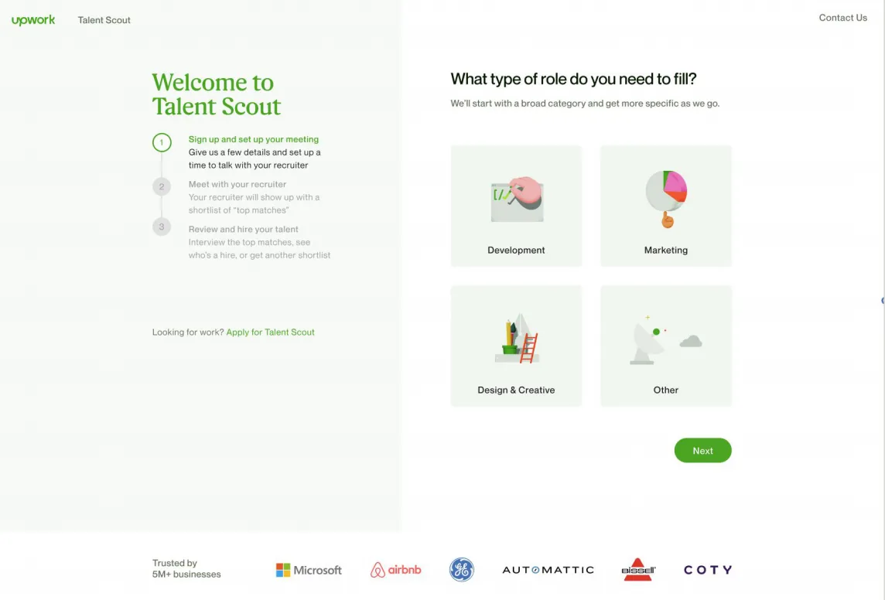
- Left and right columns increase cognitive load
- Low-domain clients unsure of role categories
- No back button to return to Talent Scout landing page
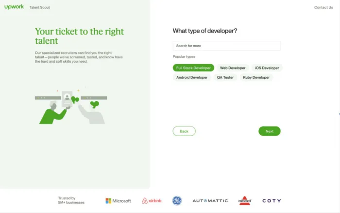
- Non-tech-savvy clients unsure of needed roles/skills
- Clients wanting a website may not know they need an HTML developer
- No search corrections for misspellings
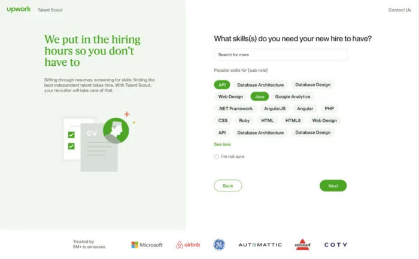
- Clients unaware of remaining steps in the process
- Willing to provide more info if it helps the recruiter
- Need visual confirmation — selected skills vanish into a "cloud"
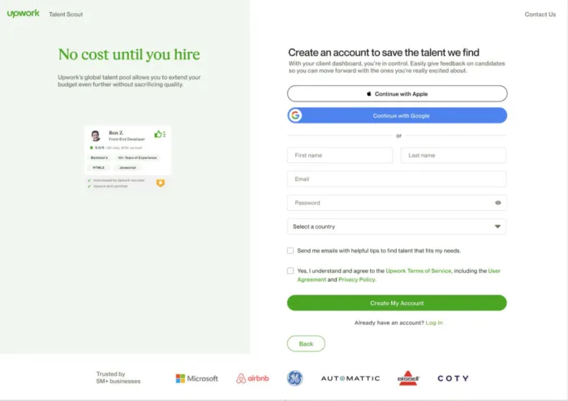
- Too much info required upfront
- Clients unclear on why info is needed
- Illustration doesn't match non-development categories
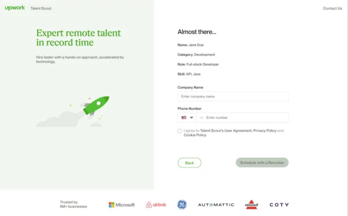
- Users lose interest/patience with excessive info requests
- Some drop off due to phone number requirement
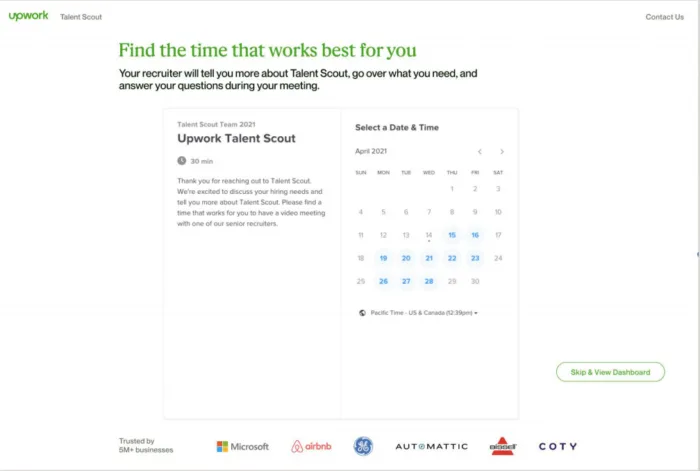
- Small businesses worry TS favors big companies
- Want clarity on first meeting benefits
- Mobile users missed date/time picker initially
- Clients want to share more about the role
One question that reframed the entire flow
I mapped the full journey with stakeholders — every touchpoint, every drop-off, every emotional beat. From that map, the team voted on HMW questions. The winner became our north star:
"How might we collect as much information from the client as possible before the recruiter call, without it feeling too cumbersome?"
The journey map surfaced a tension: recruiters need detailed info to prepare good matches, but every extra question pushed clients closer to abandoning. The design had to thread that needle — gather more while feeling like less.
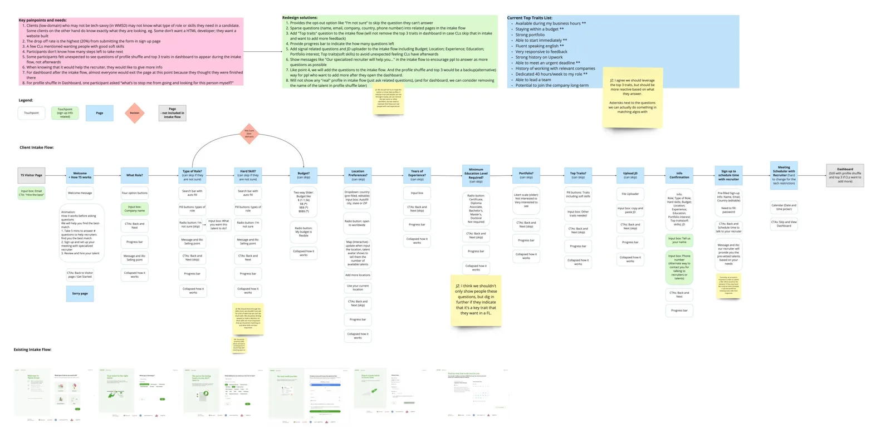
Three problems, decomposed
I brought engineering into the room early — before any wireframes. Together, we decomposed the friction into three solvable problems:
- Sign-up page is the biggest drop-off point
- Simplify the sign-up process
- Provide auto-fill for country
- Pre-fill email and name
- Low-domain clients don't know what role to hire
- Let users type anything, use data science to match relevant roles
- Guide to another service if role doesn't fit our categories
- Clients want to know how and what they should pay
- Provide min-max hourly rate range
- Notify if budget is below TS range
- Show estimated rate based on role, skills, location
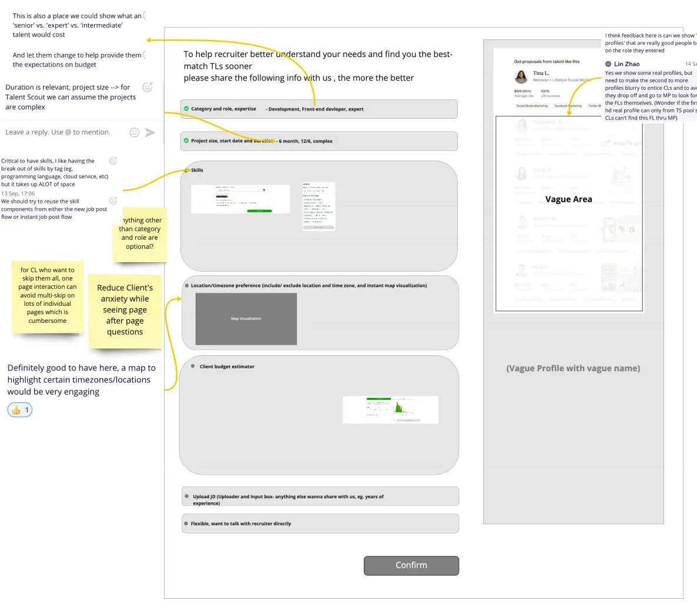
An IA with no dead ends
I rebuilt the information architecture with engineering, ensuring every path led somewhere useful. The key moves: budget/timezone questions upfront (so recruiters arrive prepared), a "skip all" escape hatch for low-domain clients, and real talent previews to sustain curiosity mid-flow.
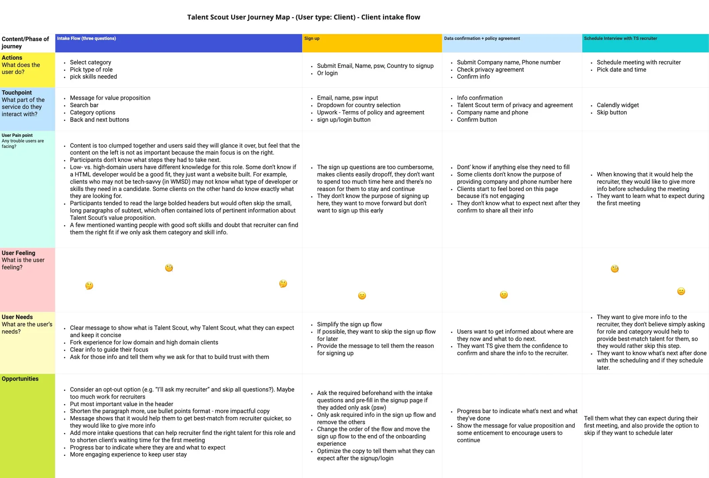
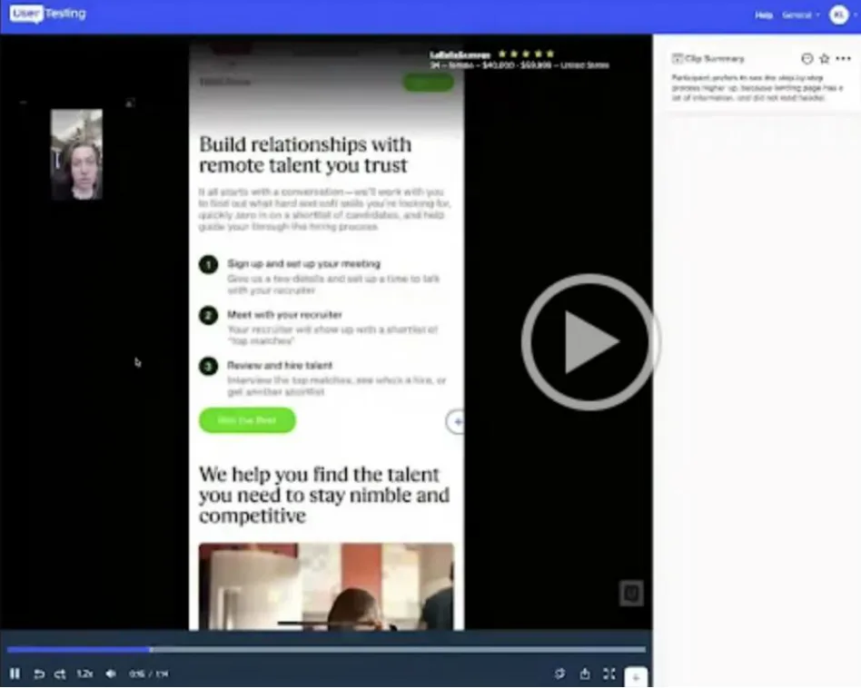
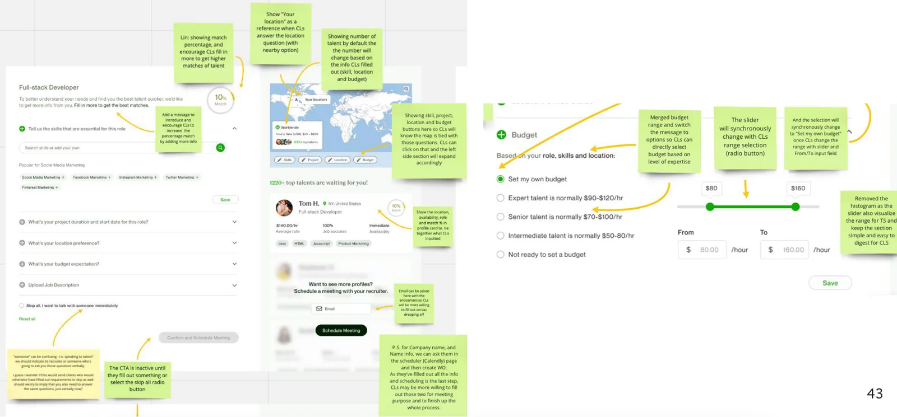
The test that flipped the flow order
Think-aloud testing revealed something we hadn't anticipated: clients' mental model was backwards from our flow. They wanted to talk to a recruiter first, then provide details — not the other way around. That single insight triggered four strategic iterations:
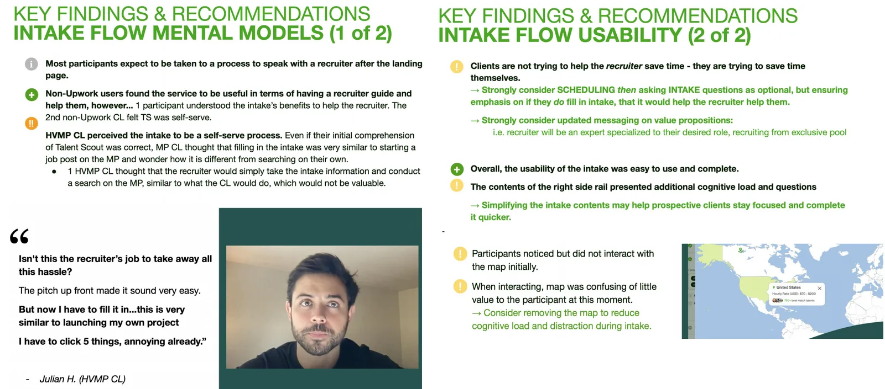
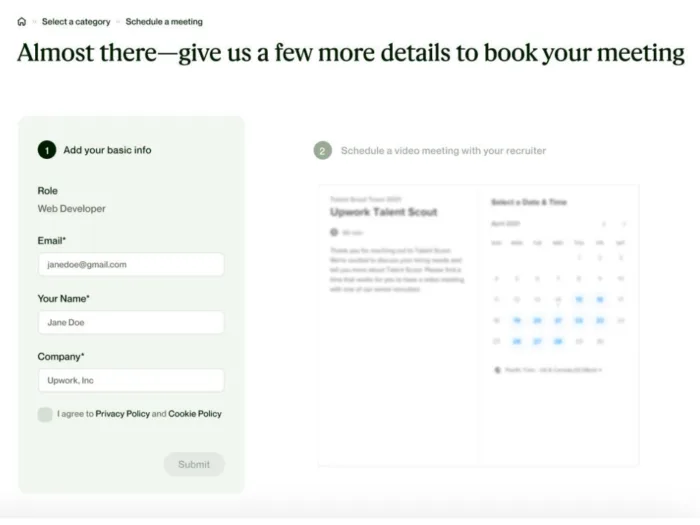
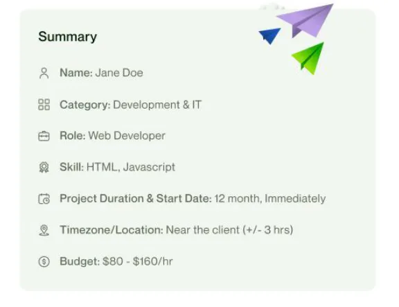
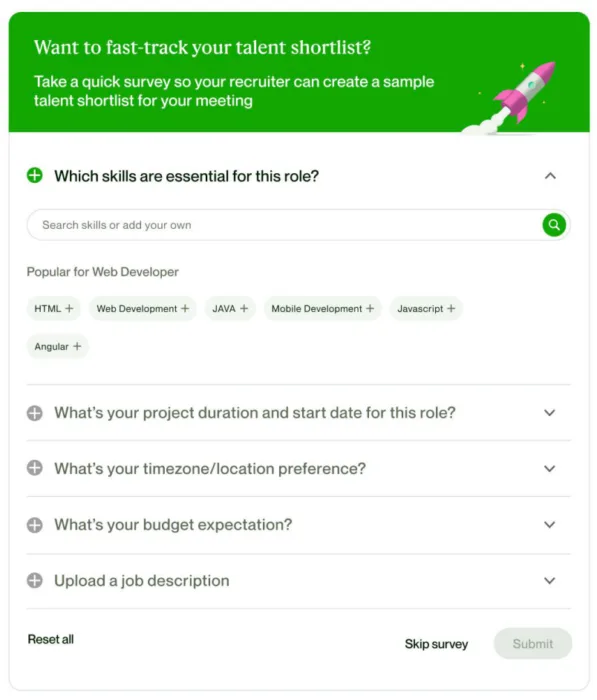
The shipped flow
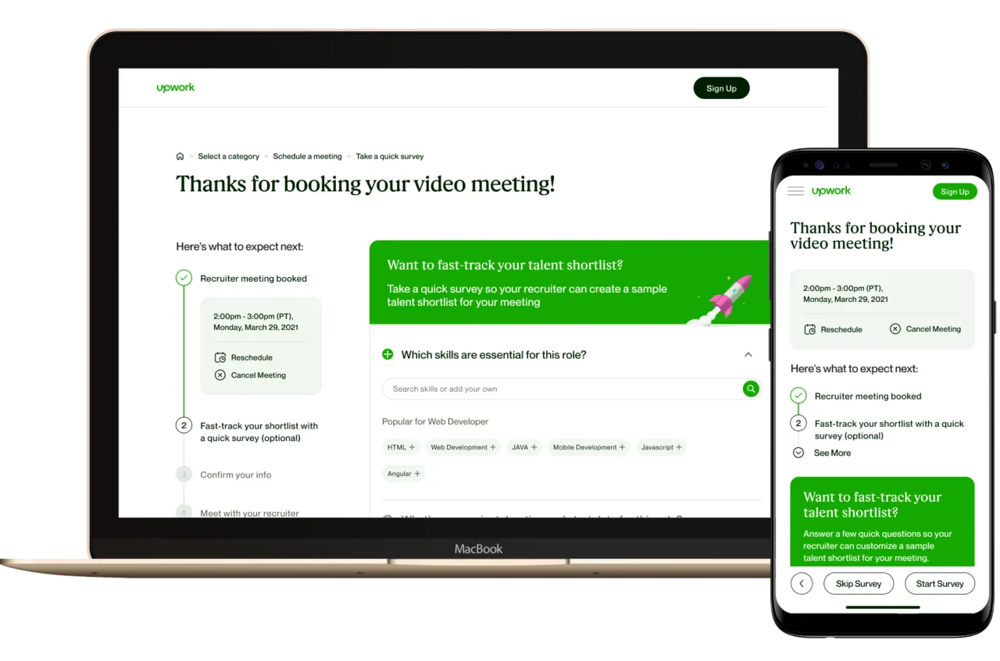
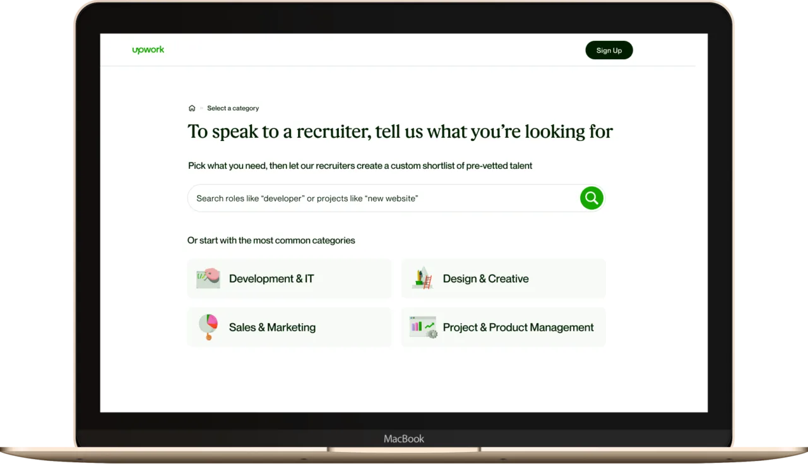
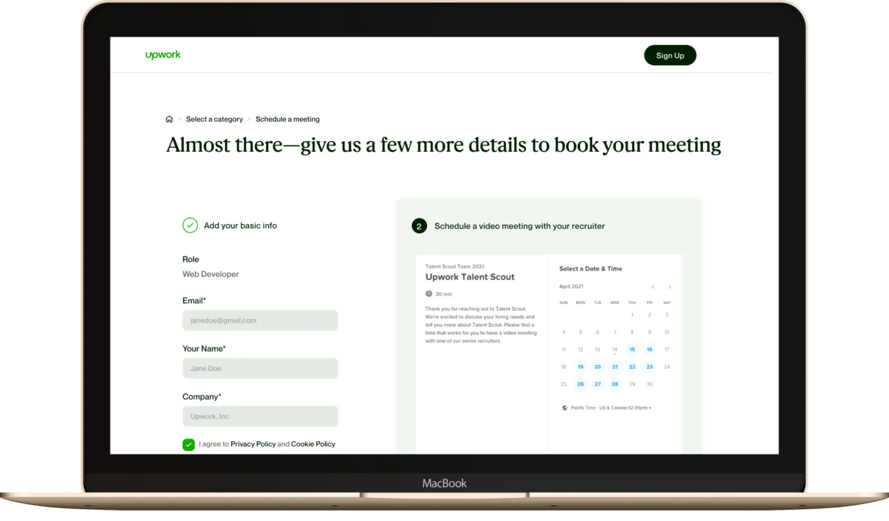
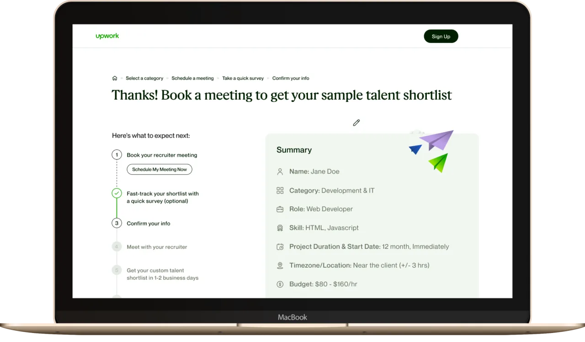
What changed
The flow reorder was the unlock. Once clients booked a recruiter call before the detailed intake, every downstream metric moved:
The real lesson: We assumed the problem was content — too much, too confusing. It wasn't. The problem was sequence. The same questions that felt burdensome before booking a call felt reasonable after — because now the client had a reason to invest. Order creates meaning.
Let's close
a gap together.
I'm looking for teams where research drives the roadmap and design ships — not just specs.